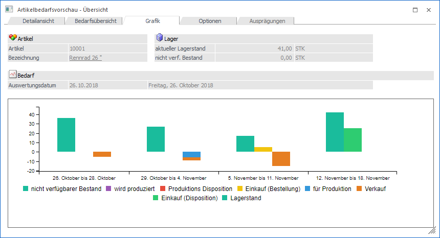
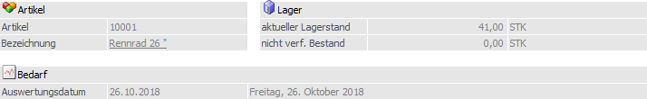
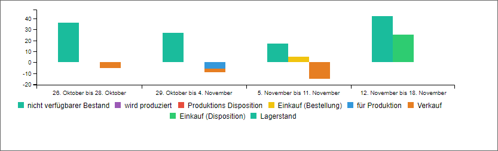
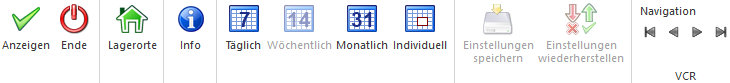

Die Artikelbedarfsvorschau zeigt den voraussichtlichen Artikelbedarf (sogenannte "Dispositionen") für ein Produkt zu einem bestimmten Zeitpunkt an, wobei selektiv ausgewählt werden kann, welche Einflussfaktoren auf diesen Artikelbedarf wirken sollen.
Der Aufruf der Bedarfsvorschau kann hierbei in jedem Feld, in welchem die Artikelnummer eingegeben werden kann, über das Kontextmenü der rechten Maustaste (Funktion "Bedarfsvorschau") erfolgen (z.B. in der Belegerfassung, dem Artikelstamm, etc.).

Das Fenster ist in die folgenden Register unterteilt:
ü Register "Detailansicht"
In diesem
Register werden die Dispositionszeilen in Form einer Tabelle dargestellt.
ü Register "Bedarfsübersicht"
In
diesem Register werden die Dispositionszeilen in Form eines Zeitstrahls
aufbereitet.
ü Register "Grafik" (aktuelles
Register)
In diesem Register werden die Dispositionszeilen in Form einer
Grafik dargestellt.
ü Register "Optionen"
In diesem
Register können Einstellungen für die Darstellung der Artikelbedarfsvorschau
getroffen werden.
ü Register "Ausprägungen"
Handelt es
sich bei dem Artikel um einen Hauptartikel mit Ausprägungen, dann werden in
diesem Register Detailinformationen über die Ausprägungen angezeigt.
Register "Grafik"

Artikel / Lager / Bedarf

Ø Artikel
An dieser Stelle wird die Artikelnummer des Produktes angezeigt, welches aktuell in der Bedarfsvorschau betrachtet wird.
Hinweis
Die Bedarfsvorschau wird standardmäßig für den Artikel geöffnet, auf welchem beim Aufruf der Fokus lag. Eine Änderung des Artikels ist im Register "Optionen" möglich.
Ø Bezeichnung
In diesem Feld wird die Artikelbezeichnung des Produktes angezeigt, welches aktuell in der Bedarfsvorschau betrachtet wird.
Ø aktueller Lagerstand
In diesem Feld wird der aktuell gültige Lagerstand wird angezeigt. Neben dem Lagerstand wird der Colli des Artikels ausgegeben.
Ø nicht verf. Bestand
Hier wird der Bestand der Lagerorte des Lagermanagements ausgewiesen, welche als nicht verfügbar gekennzeichnet sind. Neben dem Bestand wird der Colli des Artikels ausgegeben.
Ø Auswertungsdatum
An dieser Stelle wird das aktuelle Datum (mit welchem man in WinLine eingestiegen ist) angezeigt, welches in weitere Folge den sogenannten "Stichtag" darstellt.
Hinweis
Bei Bedarf kann das Datum im Register "Optionen" geändert werden.
Grafik "Bedarf"

In der Grafik werden alle Bedarfszeilen (Dispositionen) in Form einer Balkengrafik aufbereitet und über einen zu definierenden Zeitraum angezeigt.
Hinweis 1
Die Beeinflussung der Einflussfaktoren (welche Art von Dispositionen herangezogen werden sollen) erfolgt im Register "Optionen".
Hinweis 2
Der Standard-Zeitraum wird im Register "Optionen" definiert. Zusätzlich kann über die Tabellenbuttons der Zeitraum gewechselt werden.
Buttons

Ø Anzeigen
Durch Anwahl des Buttons "Anzeigen" bzw. der Taste F5 wird die Anzeige der Bedarfsvorschau, gemäß der aktuell gewählten Einstellungen, aktualisiert.
Ø Ende
Durch Anklicken des Buttons "Ende" bzw. der Taste ESC wird das Fenster geschlossen.
Ø Lagerorte
Bei Anwahl des Buttons "Lagerorte" wird das Programm "Artikel - Lagerorte" aufgerufen und die aktuellen Lagerorte des Artikels dargestellt.
Ø Info (nur im Register "Bedarfsübersicht" und "Grafik")
Durch Anwahl des Buttons "Info" wird die aktuelle Zeitschiene in Form einer Grafik am Bildschirm ausgegeben.
Ø Täglich / Wöchentlich / Monatlich / Individuell (nur im Register "Bedarfsübersicht" und "Grafik")
Durch Anwahl der Buttons kann der Zeitintervall für die Anzeige geändert werden.
Ø Einstellungen speichern (nur im Register "Optionen")
Mit Hilfe des Buttons "Einstellungen speichern" werden die vorgenommenen Einstellungen benutzerspezifisch gespeichert.
Ø Einstellungen wiederherstellen (nur im Register "Optionen")
Durch Anwahl des Buttons werden die zuletzt gespeicherten Einstellungen geladen.
Ø VCR-Buttons
Über die so genannten VCR-Buttons, welche in jedem Register zur Verfügung stehen, kann durch Mausklick zwischen den Datensätzen geblättert werden.
ü  Damit kann der
erste Datensatz angesprochen werden.
Damit kann der
erste Datensatz angesprochen werden.
ü  Damit kann der
vorherige Datensatz angesprochen werden.
Damit kann der
vorherige Datensatz angesprochen werden.
ü  Damit kann der
nächste Datensatz angesprochen werden.
Damit kann der
nächste Datensatz angesprochen werden.
ü  Damit kann der
letzte Datensatz angesprochen werden.
Damit kann der
letzte Datensatz angesprochen werden.
Hinweis
Beim Blättern zwischen den Artikel-Datensätzen werden Ausprägungen standardmäßig "überblättert", d.h. es wird von einem Hauptartikel zum nächsten geblättert. Sollten auch Ausprägungen berücksichtigt werden, so muss beim Blättern zusätzlich die STRG-Taste gedrückt werden.